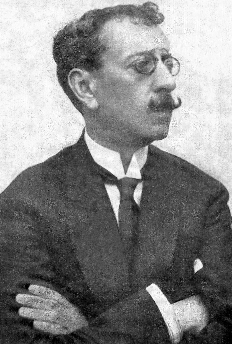
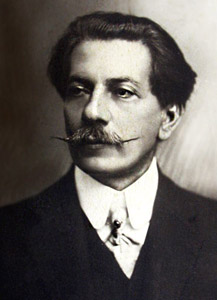
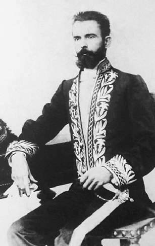

Biografia:
Olavo Bilac nasceu em 1865 no Rio de Janeiro e teve uma trajetória diversificada.
Abandonou os estudos de medicina e direito, o que causou desentendimentos com a família.
Tornou-se jornalista e cronista, escrevendo para diversos periódicos. Foi preso por
oposição ao governo de Floriano Peixoto e se refugiou em Ouro Preto. Fundou a Academia
Brasileira de Letras em 1897. Além de sua atuação literária, tornou-se conhecido por um
acidente de carro em 1897, sendo o primeiro motorista a sofrer um acidente no Brasil. Mais
tarde, dedicou-se ao nacionalismo e ao serviço militar obrigatório, além de escrever a
letra do Hino à Bandeira. Faleceu em 1918, sendo conhecido como o "Príncipe dos Poetas."
Características:
Antirromantismo: não sentimental
Antropocentrismo: valorização da razão
Objetividade: em oposição ao subjetivismo
Poesia descritiva
Rigor formal: metrificação e rimas
Valorização da arte pela arte: não utilitarismo
Alienação social: indiferença ás questões sociopolíticas
Valorização da beleza, no que diz respeito ao tema e à forma do poema
Distanciamento do eu lírico: não participa do conteúdo expresso pelo texto
Referências greco-romanas
Uso de polissíndeto: repetição da conjunção "e"
Alberto Oliveira

Biografia:
Alberto de Oliveira, nascido em 1857 em Saquarema, Rio de Janeiro, foi um poeta
brasileiro. Publicou seu primeiro livro, "Canções românticas," em 1878, antes de se
envolver com o parnasianismo. Abandonou a faculdade de medicina, mas concluiu farmácia em
1884. Trabalhou no governo estadual, foi professor e escreveu para diversos periódicos.
Fundador da Academia Brasileira de Letras, manifestou apoio ao Modernismo em 1925, embora
não tenha seguido adiante. Faleceu em 1937 em Niterói.
Características:
Linguagem objetiva: em oposição ao subjetivismo
Perspectiva antirromântica: não sentimental
Rigor formal: metrificação e rimas
Valorização da antiguidade clássica
Alienação social: indiferença ás questões sociopolíticas
Descritivismo
Distanciamento do eu lírico: não participa do conteúdo expresso pelo texto
Uso do polissíndeto: repetição da conjunção "e"
Raimundo Correa

Biografia:
Raimundo Correia nasceu em 1859 no Maranhão, mudou-se para o Rio de Janeiro na
adolescência e estudou no colégio Pedro II. Publicou seu primeiro livro, "Primeiros
sonhos," em 1879. Exerceu cargos como promotor público e juiz em várias cidades do Brasil
e também foi professor de Direito Criminal. Em 1897, trabalhou na Legação do Brasil em
Portugal. Foi um dos fundadores da Academia Brasileira de Letras, ocupando a primeira
cadeira número 5. Faleceu em 1911 em Paris, vítima de tuberculose. Após sua morte, a
cadeira foi ocupada por Oswaldo Cruz.
Características:
Antirromantismo: não sentimental
Linguagem objetiva: em oposição ao subjetivismo
Descritivismo
Rigor formal: metrificação e rimas
Alienação social: indiferença ás questões sociopolíticas
Referências greco-latinas
Distanciamento do eu lírico: não participa do conteúdo expresso pelo texto